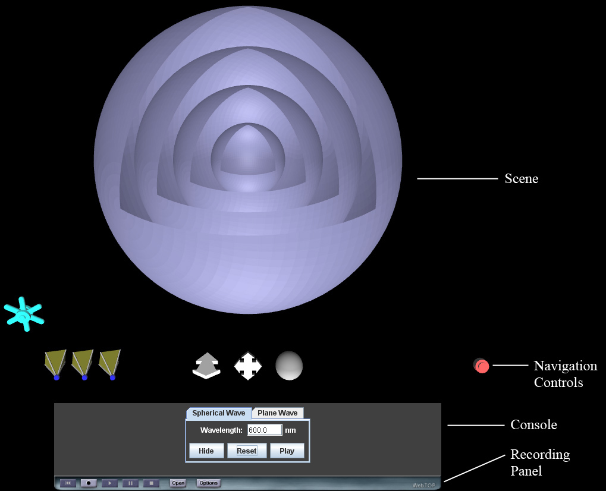

Wavefronts: Directions
The default view for the WebTOP window looks like the following:

The WebTOP window has four parts. The top portion is the active WebTOP Scene.
The second portion is the X3D Navigation Controls, which allow you to manipulate
the scene. The third portion is the Console, which allows you to the change parameter
values used in the simulation. The fourth portion is the Recording Panel, which allows
you to record and replay WebTOP sessions. You may scroll down to read on, or select
the appropriate link from the following items:
How To Change Parameters
The parameters that can be changed are: (a) the type of wave (spherical or plane)
and (b) the wavelength of the wave.
Changing the Type of Wave
To choose the type of wave, click on the tab in the console with the
desired name (Spherical Wave or Plane Wave).
Changing the Wavelength of the Incident Light
The wavelength can be changed either by typing the desired value into the
Wavelength number box, or by using the cursor to spin the wheel widget that is
in the lower left portion of the scene. The allowed range of wavelength values
is 400 to 800 nm.
Using the Controls
The Hide Widgets/Show Widgets button hides or shows the widget in the scene.
The Reset button resets all the parameters to their default values. The Play/Stop
button starts or stops the motions of the wavefronts.
Back to Top
|